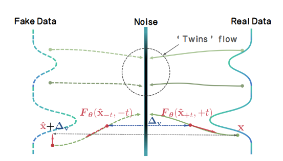
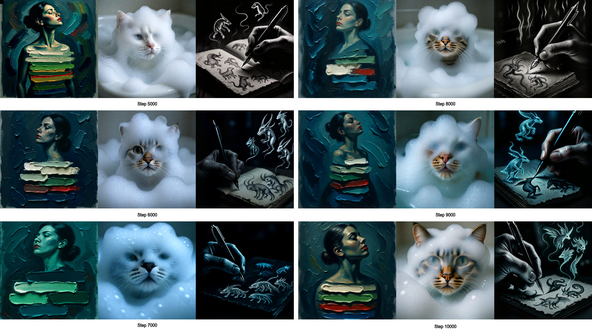
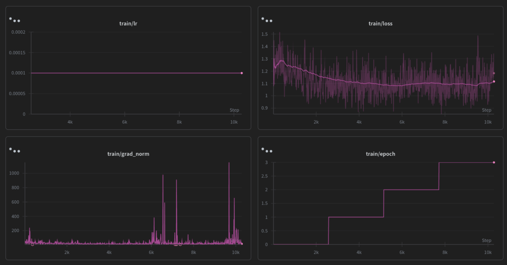

Enhancing TwinFlow with Latent-Space RL and Dynamic Noise Scheduling for Qwen-Image-2512
Samples for the final run, sampled every 100 steps [1328x1328 | 2 NFE's]
Abstract
Efficient inference in large flow models often demands a trade-off between sampling steps and generation quality. While TwinFlow offers a discriminator-free pathway to 1-step generation via twin-trajectory velocity matching, standard distillation inherently caps student performance at the teacher's level. In this blog, I aim to detail a modified training framework for Qwen-Image-2512 that integrates TwinFlow with latent-space Reinforcement Learning and Dynamic Renoise Sampling much like DMD-R and I was also inspired by this post from FAL. Here I'll try to explore the mathematical foundations of these enhancements, scaling them using FSDP2, and the configuration used to achieve somewhat good 2-step generation atleast enough to prove that this could work.
Introduction
The deployment of 20B+ parameter models like Qwen-Image-2512 is frequently bottlenecked by inference latency. Standard flow matching or diffusion pipelines require 28-50 Number of Function Evaluations (NFEs) to produce high-fidelity samples. Distillation techniques aim to compress this trajectory, but traditional methods face a dichotomy: adversarial distillation (e.g., GAN-based) introduces training instability and memory overhead, while consistency-based methods often degrade sharply below 4 NFEs.
Comes TwinFlow: utilizing a self-adversarial twin-trajectory objective to straighten flow paths without external discriminators. However, pure distillation suffers from a "performance ceiling" the student cannot exceed the teacher's distribution quality.

In this work, I try to extend the TwinFlow framework by integrating RL-guided optimization and Dynamic Renoise Sampling. These enhancements allow the student model to escape local modes inherent in the teacher's distribution while stabilizing the early training phase. I'll also add details for the infrastructure upgrades required to train this setup efficiently using FSDP2, validation loops, and bucketed datasets.
The TwinFlow Foundation
At its core, TwinFlow operates within the Any-Step Generative Model Framework (based on RCGM). The key innovation is the extension of the time interval from \(t \in [0,1] \to t \in [-1,1]\), creating two symmetric trajectories originating from the noise distribution. Though I would recomend reading the TwinFlow paper rather then this!
Twin Trajectories
The standard flow (positive branch, t > 0) maps noise to real data. The twin flow (negative branch, t < 0) maps noise to "fake" data produced by the model itself. This structure enables a self-contained adversarial objective.Given a noise sample \(z \sim \mathcal{N}(0, \mathbf{I})\), the perturbed real sample is: \[ x_t^{\mathrm{real}} = \alpha(t) \, z + \gamma(t) \, x_t^{\mathrm{real}} \] The perturbed fake sample (using model output \(\hat{\mathbf{x}}_t\)) is: \[ x_t^{\mathrm{fake}} = \alpha(t')\, z^{\mathrm{fake}} + \gamma(t')\, \hat{x}_t \]
Velocity Matching & Rectification
The learning objective minimizes the discrepancy between the velocity fields of these two trajectories. Under linear transport \((\alpha(t) = t,\ \gamma(t) = 1 - t)\) , the score function \(s(x_t)\) relates to the velocity field \(F_\theta\) as: \[ s(\mathbf{x}_t) = -\frac{ \mathbf{x}_t + (1-t) F_\theta(\mathbf{x}_t, t) }{t} \] The distribution matching problem is recast as a velocity matching problem. Defining the velocity difference \(\Delta v\): \[ \Delta v(\mathbf{x}_t) := v_{\mathrm{fake}}(\mathbf{x}_t, -t) - v_{\mathrm{real}}(\mathbf{x}_t, t) \] The Rectification Loss encourages the model to straighten the generative trajectory, enabling few-step generation, In my implementation (twinflow.py), this is handled within thetraining_step method, where prepare_inputs constructs the twin time conditions (tt) and masks (sample_masks) to partition the batch between standard flow matching and twin-flow rectification.
Breaking the Ceiling: RL-Guided Distillation
A critical limitation of distribution matching is that the student converges to the teacher's distribution \(p_{teacher}\). If the teacher has mode collapse or suboptimal aesthetics, the student inherits them. To circumvent this, I added an RL loss term that optimizes directly for human preference scores.
The Objective
The total loss function becomes: \(L_{total} = L_{TwinFlow} + \lambda_{rl} L_{rl}\), Where \(L_{rl}\) is derived from a reward model \( R_{\phi}\) (e.g., HPSv2). Instead of policy gradient methods that require sampling multiple steps per update, I tend to utilize reward gradients projected into the latent space.Latent-Space Gradient Projection
Computing gradients directly in latent space is challenging due to the non-linear VAE mapping. I used a finite-difference approximation via pixel-space perturbation:- Decode: Convert latent fake samples \(z_{fake}\) to pixels \(x_{pix} = VAE_{dec}(z_{fake})\).
- Reward Gradient: Compute \(\nabla_{x_{pix}}R_{\phi}(x_{pix}, prompt)\).
- Perturb & Re-encode: Modify pixels in the reward-improving direction \(\tilde{x}_{pix} = x_{pix} - \eta\nabla_{x_{pix}}R \), then encode back \( \tilde{z}_{fake} = VAE_{enc}(\tilde{x}_{pix}) \).
- Latent Gradient: The update direction is approximated as \( g_{latent} \approx z_{fake} - \tilde{z}_{fake} \).
compute_rl_gradients:
def compute_rl_gradients(self, model, fake_samples, prompts, step):
if not self.use_rl or step < self.rl_warmup_steps:
return torch.zeros_like(fake_samples)
# Decode latents → pixels
fake_pixels = model.latents_to_pixels(fake_samples)
# Compute pixel-space reward gradients
pixel_grads = compute_reward_gradients(self.reward_model, fake_pixels, prompts)
# Project pixel-space gradients → latent-space via finite differences
pixels_modified = (fake_pixels - self.rl_weight * pixel_grads).clamp(-1, 1)
latents_modified = model.pixels_to_latents(pixels_modified)
return fake_samples - latents_modified
Cold Start & Warmup
RL signals are noisy when the generator produces unintelligible images. To mitigate reward hacking and instability, I added a warmup periodrl_warmup_steps: 2000. During this phase, \(\lambda_{rl} = 0 \), allowing the TwinFlow loss to establish basic coherence before RL fine-tunes aesthetics.
Stabilizing Convergence: Dynamic Renoise Sampling
In the early stages of distillation, the student distribution \(p_{fake}\) diverges significantly from the real distribution \( p_{real}\). Standard uniform noise sampling \( t \sim \mathrm{Uniform}(0,1) \) can lead to unreliable score estimates when overlap is sparse.
For that I adopted the Dynamic Renoise Sampling strategy (similar to DynaRS) from DMD-R. The core idea is to bias the sampling of renoise levels \( t \) towards higher noise values (where signal-to-noise ratio is lower but structural overlap is higher) early in training, gradually transitioning to uniform sampling.
Sampling \(t\) from a Beta distribution \(Beta(\alpha, \beta) \) where \( \alpha \) decays over training steps:
\[
\alpha(step) = \alpha_{start} \cdot (1-progress) + \alpha_{end} \cdot progress
\]
In twinflow.py, this is handled by sample_renoise_time_dynamic:
def sample_renoise_time_dynamic(self, x: torch.Tensor, step: int) -> torch.Tensor:
bias = self.get_dynamic_renoise_bias(step)
if bias > 0:
# Sample with bias toward higher t (more noise)
# Use Beta distribution: Beta(bias, 1) skews toward 1
t = self.sample_beta(bias, 1.0, x)
else:
# Uniform sampling (standard TwinFlow)
t = self.sample_beta(1.0, 1.0, x)
return t
- Global Structure First: High noise levels force the model to learn global semantics before fine details.
- Score Reliability: At high noise, even poor generator outputs lie in a regime similar to the real score estimator, providing valid gradient directions when distributions are far apart.
- Smooth Transition: As the model improves, the bias decays (renoise_schedule: [4.0, 1.0, 3000]), allowing learning of finer details via uniform sampling.
FSDP2 & Training Infrastructure
Training a 20B parameter model with these additional loss terms requires significant infrastructure improvements over the original TwinFlow repository. For starters I migrated the codebase from FSDP1 to FSDP2 torch.distributed.fsdp.fully_shard and added a validation pipeline.
FSDP2 Sharding
The original repo used standard FSDP wrappers. I switched them tofully_shard for fine-grained memory control, applying it recursively to transformer blocks. And I disabled the resharding after forward pass for the final block to optimize backward pass gathering.
# rlhf_fsdp.py
def apply_fsdp2_to_model(model, no_split_modules, device_mesh, mp_policy):
transformer = model.transformer
# ... recursive sharding ...
fully_shard(child, mesh=device_mesh, reshard_after_forward=True, mp_policy=mp_policy)
# Critical: Final block optimization
sharded_modules[-1].set_reshard_after_forward(False)
Validation & Learning Rate Scheduling
The original training script lacked a validation loop. So I made a 10% validation split (bucket-aware) and a ReduceLROnPlateau scheduler. This allows early stopping based on validation loss rather than fixed steps.
# rlhf_fsdp.py
scheduler = ReduceLROnPlateau(
optimizer, mode='min', factor=0.1, patience=3, min_lr=1e-7
)
# Inside epoch loop
validation_results = run_validation(val_dataloader, ...)
scheduler.step(validation_results['avg_val_loss'])
Bucketed Dataset & Dynamic Resolution
To maximize throughput, I also added a bucketed dataset BucketedShareGPTDataset that groups images by aspect ratio. The training script handles dynamic batch sizing per bucket to maintain constant memory usage across varying resolutions (e.g., 1328x1328). Also I pre-encoded the dataset so I don't have to run the VAE encode at all times.Observations and Results
In this blog I kinda aimed to prove that implementing Dynamic Renoise Sampling, and integrating latent-space reward gradients, it is technically feasible to train a few-step generators with complex, multi-objective loss functions. However, science is as much about understanding failure as it is about celebrating success. There was no light at the end of the tunnel this time. the training dynamics reveal critical insights into the stability limits of this approach or atleast my training run keeping in mind that I did not exactly have all the resources I would have wanted for the final run I used a 4xH200 instance from verda.

All the samples were generated using CFG:4.0 and steps:8 with hight and width set as 1328x1328
Training Dynamics Analysis
The training run 10k steps on 4xH200 and exhibited a distinct "Cold Start Success, Late-Stage Divergence" pattern I cannot do a one to one comparission with vanilla TwinFlow due to insuficient compute so take all this with a grain of salt:Effective Cold Start (Steps 0-3k-5k): The Dynamic Renoise Bias (starting at 4.0) did stabilize the early phase from what I can see. Loss decreased from 1.25 to 1.11 to 1.08, and Validation loss went from 1.052 to 1.047 confirming that biasing toward higher noise levels helps the student model learn global structure before finer details.
Divergence and Overfitting (Steps 5k-10k): As the renoise bias decayed to 1.0 (uniform sampling) and RL gradients became fully active, the validation loss began to climb steadily, reaching 1.12 by step 10k. Simultaneously, from the logs I observe massive spikes in Gradient Norm (greater than 1000), indicating that the combined RL and TwinFlow gradients became pretty unstable.
Sample Inconsistency: The final samples reflect this instability. While some prompts (e.g., the cow) generated coherent, high-fidelity images, others (e.g., The girl is sitting on steps in front of a building. She is relaxed and bored) suffered from severe texture artifacts or mode collapse. This suggests the RL weight (0.05) or the Reward Model sensitivity may be too aggressive for the current learning rate schedule, causing the generator to "chase" reward signals at the expense of distribution matching.

From what I understand
RL Warmup is Critical, but Insufficient: While I added a 2k step warmup, the divergence at 5k steps suggests the transition from "pure distillation" to "RL-guided" needs to be more gradual. A sigmoidal ramp-up for the RL weight rather than a hard switch might prevent the gradient shocks observed in the logs.Gradient Clipping Sensitivity: Despite setting max_grad_norm: 10.0, I observe norms exceeding 1000. This implies the reward gradients (computed via finite differences in latent space) are exploding. Future iterations should implement gradient clipping specifically on the RL loss term before combining it with the TwinFlow loss.
Validation-Driven Scheduling: The ReduceLROnPlateau scheduler detected the stagnation (epochs_without_improvement rose to 2), but the learning rate remained constant at 1e-4. For unstable RL-distillation runs, a more aggressive decay-on-spike policy is to be used I think.